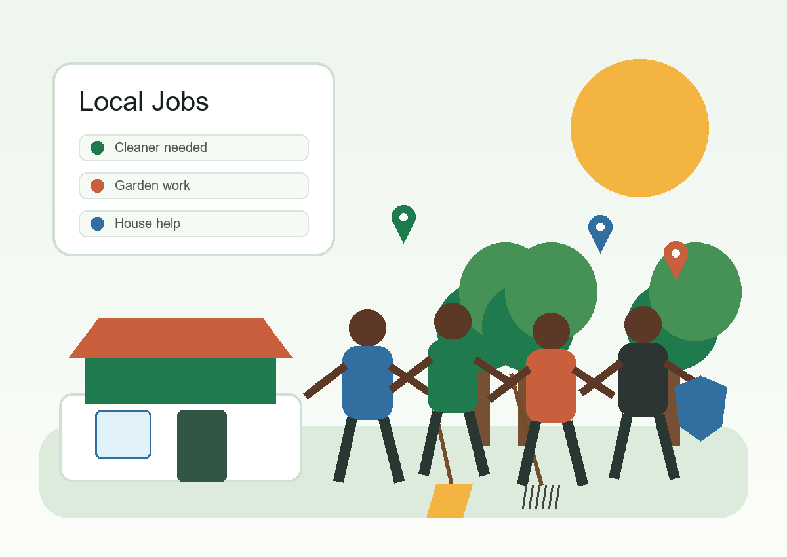

Employers post jobs
Local employers add work such as cleaning, gardening, house help, security, or shop assistant jobs.
Community work, found nearby
A simple web platform where employers post local work and job seekers apply without moving door to door.

Simple process
Local employers add work such as cleaning, gardening, house help, security, or shop assistant jobs.
Workers browse jobs by service type, area, pay, and schedule.
The application form saves the applicant details for the employer to review.